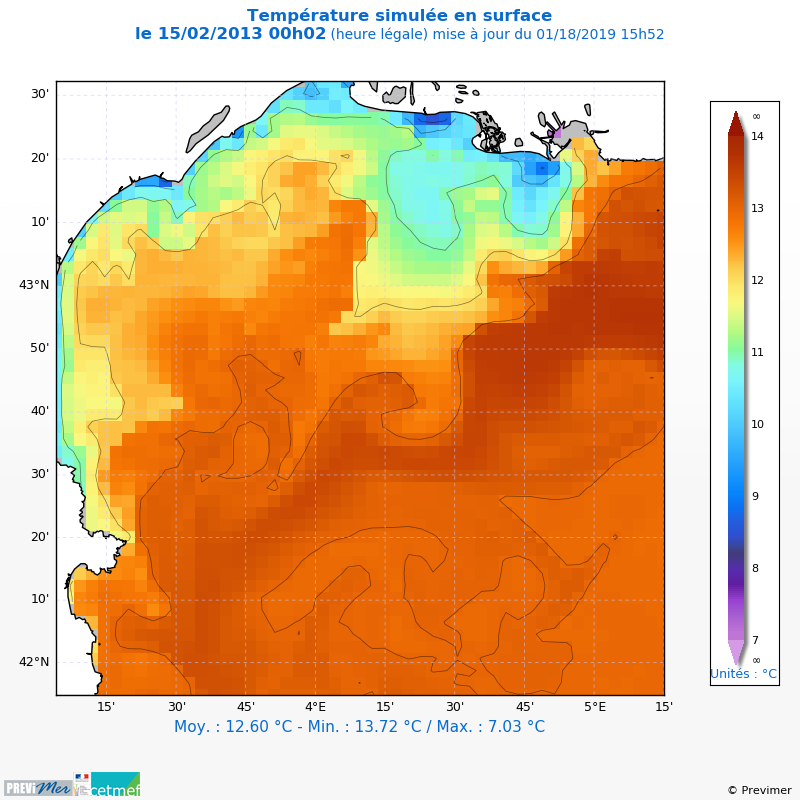

3.5.15.2. test_ifroco_map.py – Plot a PREVIMER map¶

# -*- coding: utf8 -*-
"""Plot a PREVIMER map"""
import matplotlib
matplotlib.use('agg')
# Params
field = 'sst'
logofile = "logo2_previmer_cetmef.png"
copyright = u"© Previmer"
# Imports
from vacumm.report.ifroco.maps import DS, cfgget, N, plot_map, P, data_sample
from vcmq import code_file_name, os
# Read data
ds = DS(data_sample('menor.nc'), 'mars', logger_level='critical')
data = ds.get(field)
# Some config values
long_name = cfgget('long_name_model', field)
units = cfgget('units', field)
levels = None # N.array(cfgget('levels', field))
extend = cfgget('cb_extend', field)
if long_name: data.long_name = long_name
if units: data.units = units
# Plot
logofile = os.path.join(os.path.dirname(code_file_name()), logofile)
x = plot_map(data[0:1], levels=levels, extend=extend, close=True,
savefig=code_file_name(), logos=logofile, copyright=copyright)